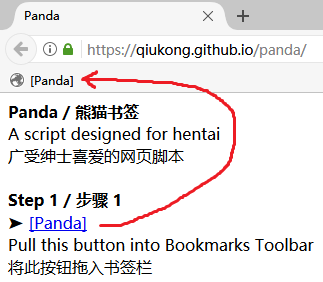
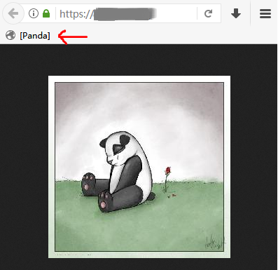
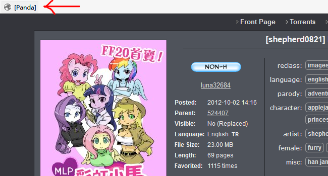
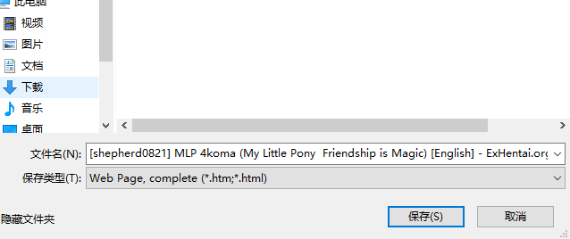

广受绅士喜爱的网页脚本
A script designed for hentai
步骤 1 / Step 1
[Panda]
将上面按钮“Panda”拖入书签栏
Pull the button "Panda" into Bookmarks Toolbar

步骤 2 / Step 2
在熊猫图片页运行书签解锁登录
Click to run the bookmark to break-in panda page

步骤 3 / Step 3
在专辑预览页运行书签启动列表模式
Click to run the bookmark in a gallery preview page

步骤 4 / Step 4
输入图片范围（起始,结束），填写“0”加载全部（图片过多时加载缓慢）
Input picture range (from,to), leave "0" to load all (slow down under mass pictures)

步骤 5 / Step 5
是否加载原图？（需要下载权限且配额充足，更慢！）
Track orign? (needs download authority and enough quota, slow more!)

步骤 6 / Step 6
开撸！（如需下载图片，页面加载完成后，保存网页，全部）
Enjoy it! (to download pictures, just save the Web Page, completely, after page load finished)
